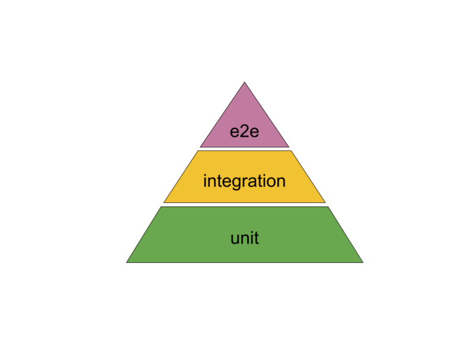
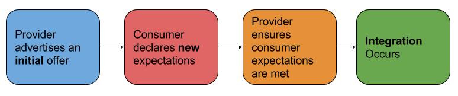

原文链接
https://codefresh.io/docker-tutorial/how-to-test-microservice-integration-with-pact/
迁移到微服务对测试我们的系统产生了新的挑战。理论上每个微服务都应该是隔离的并可以独立操作。但在实践中一个服务如果没有其他部分通常没什么用。另一方面 - 为一个服务拉起整个系统的拓扑进行测试抵消了微服务期望带来的模块化和封装。
挑战在于如何检验与其他服务集成后没有问题。我们希望越早越好。而且我们不想将复杂的生产环境重现一遍。一般来说这种检验是集成功能测试或叫端到端测试。但实际是当我们的系统越来越复杂 - 端到端带来的收益越少。 大量的相互依赖导致误报和很长的执行周期。 使得测试变得很难管理与调试。
这甚至有一个测试金字塔理论（最初由Mike Cohn在他的著作‘Succeeding with Agile’中提到）讲述了为了优化你的投入，你需要更少的高层次的端到端测试，写更多的低层次的单元测试。
请阅读本文并看看Codefresh(https://codefresh.io/codefresh-signup/?utm_source=Blog&utm_medium=Post&utm_campaign=pactT)， 他是对于Docker最好的CI。

单元测试很好！但在它带来的所有收益中 - 他们对测试与其他服务的集成没什么作用。
那我们怎样保证每个服务团队可以独立的迭代但又能保证整体系统的健康呢？我们如何实现持续交付，小批量生产，快速反馈，而又不会在每次变更时引起服务出问题呢？
一个可能的答案是Consumer-Driven Contract(CDC) 测试。这种测试策略是基于一种多年前就定义的服务进化模式。它现在分布式系统变得更常见后变得更适合了。
我尝试简单解释一下。 Consumer-Driven Contracts实际就是面向服务与服务关系的合约。意思就是不想以前是provider提供方定义接口与服务级别是什么样(同事消费者consumer尽量适配) - 现在消费者来领舞。 每个消费者来定义它期望服务提供方需要交付与需要检查的。这就将集成的责任转移到服务提供方。
那就变成以下流程：

在商务合约上者通常描述成‘将消费者放在第一位’ 或‘倾听你的客户’。因为想要提供最好的服务我们需要尽量做到客户期望和需要的。而不是我们假设对的事。
当讨论微服务进化时 - 在那种每个服务都有一个独立团队开发的大型企业里尤其重要。有时这些团队也可能在不同的地理位置和区域。这影响了即时沟通和让业务功能进化更有挑战性。
消费者驱动合约当然可以通过投资团队间的沟通与协作来管理。 也可以通过使用结构化的系列化格式如protobuf，thrift或messagepack消息体来解决。但如果要管理一个定义好的流程 - 最好使用框架，尤其如果是个开源的。
这种框架已经出现了。这其中最杰出和活跃的是Pact和Spring Cloud Contract。后者只针对使用JVM的项目。 而Pact使用Ruby写的但可以支持很多语言，包括Java，Go，Python，Javascript。 让它很适合在复杂，多样性的微服务系统中使用。
今天我们会看看如何在两个服务间定义和校验合约。消费者服务是用Python写的。而提供方服务是用Go写的。测试会在我们的CI/CD流程中进行 - 也就是在Codefresh流水线里面。
所以，Pact怎么工作的？它开始于消费者。
消费者服务的开发写一个测试。测试定义了与提供方的集成。这包括了提供方需要的状态，请求的消息体和期望的结果。基于这个定义Pact建立和运行一个提供方的桩来进行测试。这个测试的输出回事一个或多个json文件，一般是这样的：
{
"consumer": {
"name": "billy"
},
"provider": {
"name": "bobby"
},
"interactions": [
{
"description": "My test",
"providerState": "User billy exists",
"request": {
"method": "POST",
"path": "/users/login",
"headers": {
"Content-Type": "application/json",
},
"body": {
"username":"billy",
"password":"issilly"
}
},
"response": {
"status": 200,
}
},
],
"metadata": {
"pactSpecification": {
"version": "2.0.0"
}
}
}这就是合约，这就是pact。 现在他们被传给服务提供方。也可以被提交给共享的git仓库，或通过Pact Broker应用上传到共享的文件存储。
一旦合约更新过了 - 提供方需要对其进行测试验证是否仍符合要求。它通过使用共享的pact文件运行它自己的校验测试而不是真实版本的服务。如果所有的交互是符合预期的并测试通过了 - 我们就可以继续了。 如果不 - 提供方的开发需要通知消费方的开发。然后，他们可以一起分析什么导致了合约的失败。
本文来自微信公众号「麦芽面包，id「darkjune_think」
转载请注明。微信扫一扫关注公众号。
交流Email: zhukunrong@yeah.net